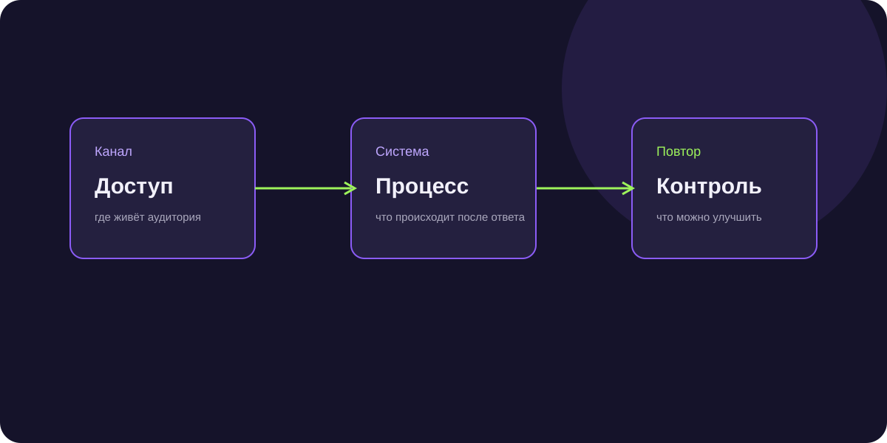

Каналы продаж B2B: как выбрать подходящий способ привлечения
Каналы продаж B2B отличаются не только стоимостью контакта. Важно, насколько быстро канал даёт контекст, можно ли выбрать нужную роль и способен ли отдел продаж обработать поток.

Короткий ответ
Канал выбирают по совпадению аудитории, уровню намерения, скорости обратной связи, стоимости квалифицированного лида и способности команды продолжить разговор.
Реклама и входящий спрос
Реклама подходит, когда человек уже ищет решение. Но в конкурентной нише стоимость контакта растёт, а качество зависит от страницы, оффера и скорости ответа.
Исходящие каналы
Email, Telegram и телемаркетинг позволяют самим выбирать сегмент. Здесь важны персональный повод, частота касаний и правила остановки коммуникации.
Рекомендации и партнёры
Партнёрский канал медленнее строится, зато один источник может приводить повторные проекты. Партнёру нужно дать понятную механику и безопасный следующий шаг.